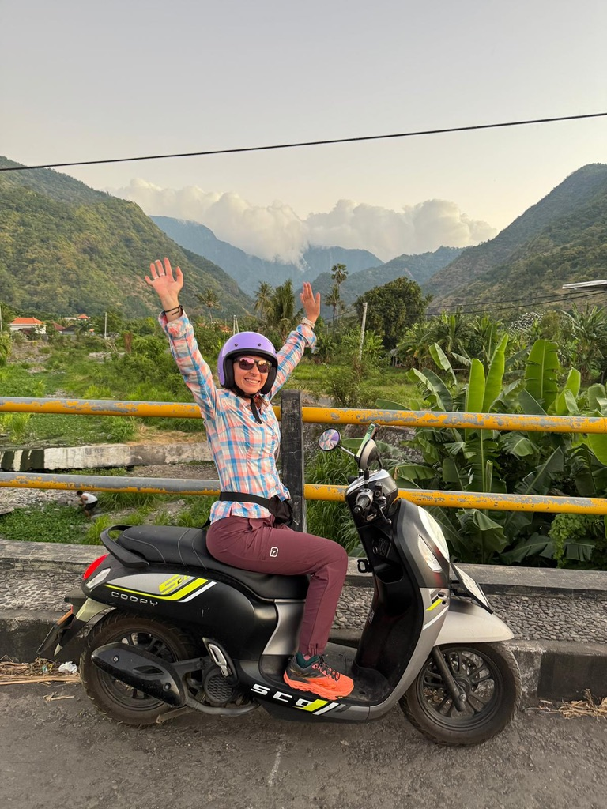
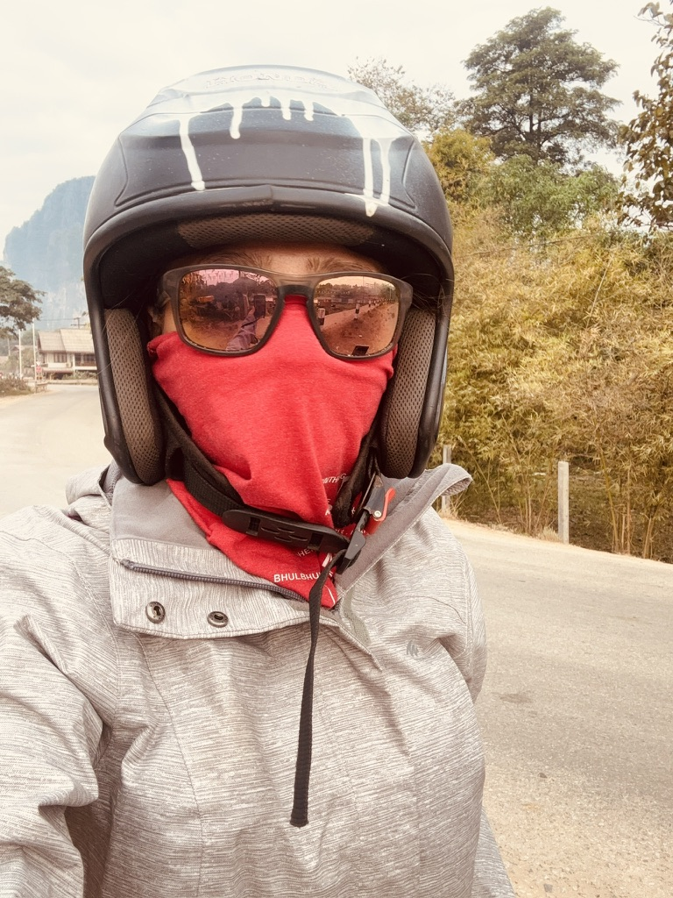
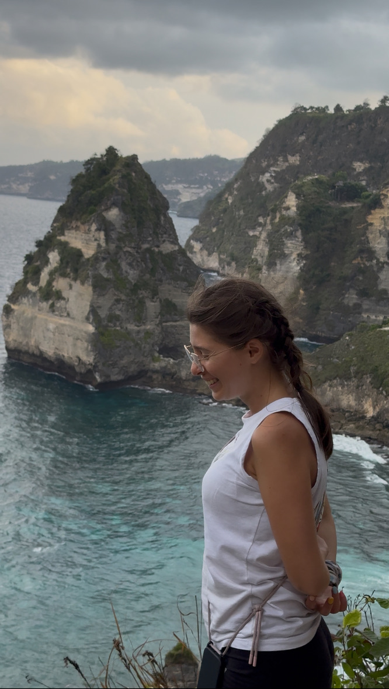
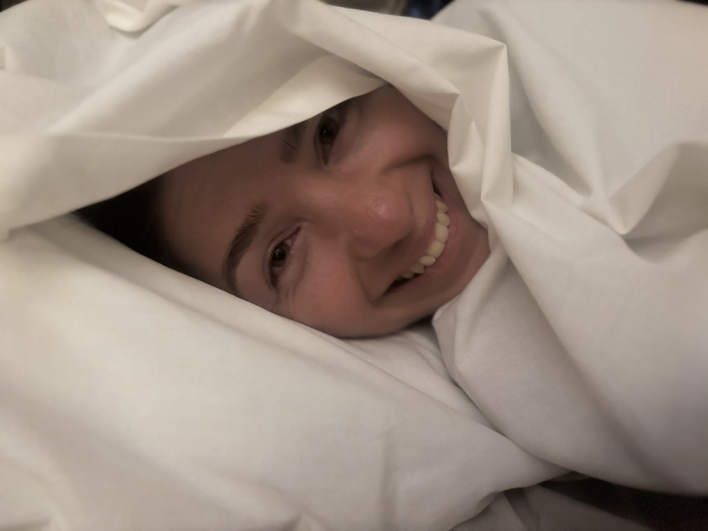
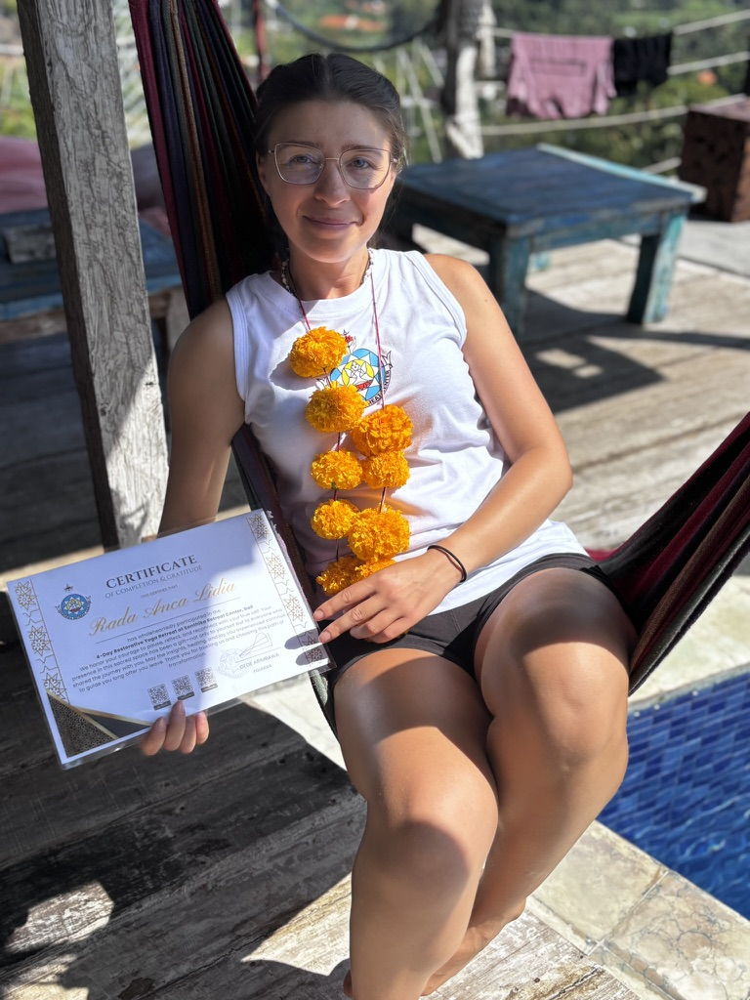
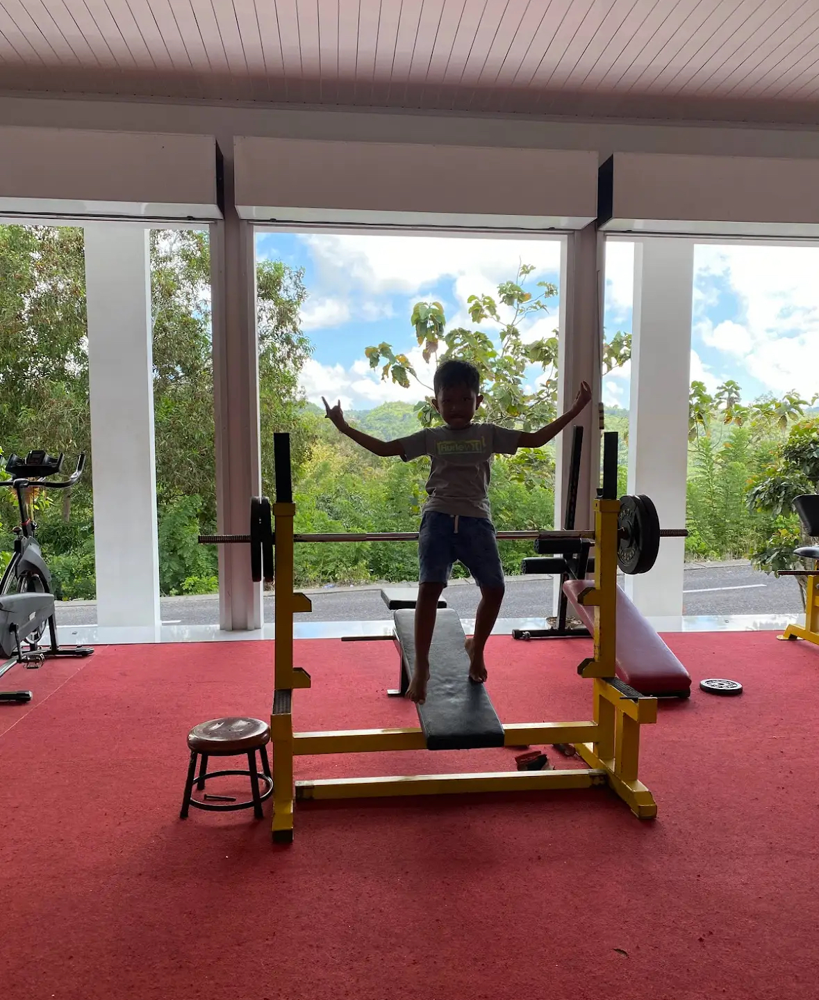

Every solo female traveller has been asked some version of the same question: but aren't you scared? And the honest answer is: sometimes yes, briefly, in the same way you're scared crossing a road in heavy traffic. You look both ways, you move with purpose, and then you're across and it's fine.
Fear is useful when it's information. It becomes a problem when it's a reason not to go at all.
These are my actual ten habits — not the polished, responsible-sounding list, but what I genuinely do, including the ones that look a bit strange from the outside.
1. Be independent — actually, structurally, logistically independent
This one comes first because it underlies everything else. Before I arrive anywhere, I have: the address of where I'm staying written down (not just in my phone), an offline map downloaded, a local SIM or a working data plan, and at least one way to get myself from A to B without asking anyone for help.

Rented this alone in Indonesia. Nobody helped me figure out the traffic. This is the face of someone who made it across three roundabouts and a market.
Independence isn't about being invincible. It's about not being stranded. A woman who can navigate herself home at 11pm without needing a stranger's phone is in a fundamentally different situation than one who can't. Build the infrastructure before you need it.
2. Don't look like a target — dress for the context, not the feed
Let me be very clear about what this is not: it is not about covering up out of shame, and it is not about "asking for it." It is purely tactical. Different places have different norms, and reading them correctly is just a form of paying attention.

This is the most coverage I have ever worn. Technically you cannot tell if I am a person. Laos, on a scooter, in winter. Safe? Absolutely. Sexy? No comment.
In a conservative town I cover my shoulders and knees. At a temple I wrap something around my waist. On a scooter I apparently become a fully anonymous entity in a helmet and mask, which — as the photo suggests — takes "not drawing attention" to its logical extreme. The point is: look at what the women around you are wearing and make a judgment call. You don't have to match them exactly. Just don't look like you're in a completely different city.
3. Walk like you've lived here for twenty years
Slow down. Put the phone away. Stop pausing in the middle of the pavement to look up and around with wide eyes. A person who looks lost announces it with their entire body — the hesitation, the swivelling head, the anxious scroll through Google Maps — and that announcement reaches the wrong people faster than you think.

This is the energy. Not rushing, not scanning for threats, not broadcasting that I have no idea where I am. Just a person who is exactly where she means to be.
When you need to check the map, step to the side. Walk into a shop if you need to reorient. Move with a direction even if the direction is approximate. Old locals don't power-walk and they don't freeze — they move with the unhurried certainty of someone who has taken this exact route a thousand times. That is the model.
4. Go to sleep early and mean it
This one gets the most pushback. People hear "go to bed early" and think I mean "be boring." What I mean is: most bad things that happen to solo travellers happen late at night, when everyone is tired, some people are drunk, visibility is lower, and transport options are worse.

9pm. Happy about it. No notes.
Early nights give you early mornings, and early mornings are safer, cheaper, less crowded, and genuinely more beautiful in almost every city on earth. You'll see the market before the tourists. You'll get the quiet hour at the temple. You'll watch the light on the water before anyone else arrives. Going to bed early is not a sacrifice. It's a strategy with excellent side effects.
5. Never stop learning — about where you're going
Research is a safety habit. Before I arrive somewhere new, I know: the common scams (they are always the same three scams in different costumes), the neighbourhood to avoid after dark, the taxi app that's actually legitimate, the emergency number, and one phrase in the local language that communicates that I am not completely lost.

A 3-day yoga retreat certificate and a marigold garland. Not strictly a safety credential, but the mindset of showing up somewhere and learning something new is exactly the point.
This doesn't have to be extensive. One afternoon of reading a recent forum thread, one look at the State Department or FCO advice page, one note saved with the local emergency number. The woman who arrives knowing things is fundamentally harder to scam than the woman who arrives knowing nothing. Knowledge is the cheapest safety tool available.
6. Have a reason to be somewhere — look like you do
A person with purpose is harder to approach than a person who looks like they have nowhere to be. This is not paranoia — it's body language. When you're sitting somewhere, open your laptop or your book. When you're waiting, look like you're waiting for someone specific. When you're walking, walk toward something.

Working. The red dress is not the point. The laptop is the point. This is what "have a reason to be here" looks like in practice — completely absorbed, clearly occupied, not available for interruption.
Aimlessness reads as vulnerability. Not because you are vulnerable — but because someone looking for an opportunity will make that calculation before you've noticed them. Having a task, even a fake one, changes the equation.
7. Get physically strong
I want to be honest about what this means and what it doesn't mean. It doesn't mean you need to be able to fight anyone. It means: fitness gives you options. You can run. You can climb. You can carry your own bag without struggling. Your body is capable and you know it is, and that knowledge comes out in how you move.

This is not me. This is the child who was using the gym when I arrived. He had the right idea though — feet planted, arms wide, completely convinced of his own capability. That is the energy. That is literally the whole point.
Physical confidence translates into visible confidence, and visible confidence is a deterrent. This isn't about being able to win a fight. It's about not looking like someone who would lose one. The two things are related but they're not the same thing.
8. Tell someone where you're going — every single time
One message. One person. "Going to X, back by Y." That's the whole system. It takes eight seconds and gives someone a reference point if you go dark unexpectedly.
I have a person at home who knows my rough itinerary at all times. Not because I expect disaster — but because the cost of sending a message is zero and the cost of nobody knowing where you are is potentially very high. Share your location on your phone if you use that. Drop a pin before a night hike or an early-morning solo activity. This is not catastrophising. It's logistics.
9. Trust the feeling in your stomach before the logic in your head
Your gut is running pattern recognition on your environment at a speed your conscious brain cannot match — reading eye contact, body language, spatial arrangement, small inconsistencies — and when it sends a signal, the signal is real even if you can't immediately articulate why.
I have left situations that felt wrong without being able to explain exactly what was wrong. I have changed my seat on a bus. I have declined a perfectly normal-looking ride. I have walked out of a restaurant within two minutes of sitting down. In every case I couldn't have told you the specific thing I noticed. In every case something was off.
You can apologise for being rude later. You can second-guess yourself after you're somewhere safe. Leave first. Analyse later.
10. Always know how to get out
Not obsessively. Not in a way that ruins the experience. Just — know where the door is. Know what the taxi situation is in this city at midnight. Know if there's a safe area with people and lights within walking distance. Know the one number you'd call if your phone was low on battery and you needed help.
It's the same logic as finding the emergency exit on a plane. You're not expecting to need it. You're just noting where it is so that if you ever do, you're not making that decision for the first time under pressure. Ten seconds of attention. Infinite peace of mind.
None of these ten things will guarantee anything. Safety is probabilistic, not absolute — for solo women, yes, but also for everyone else navigating the world. What these habits do is shift the odds. They make you a less convenient target, a more prepared traveller, and a more confident person in your own body.
Which turns out to be the thing that matters most. Not the specific tactics — but the underlying orientation. Competent. Aware. Unbothered. Going anyway.